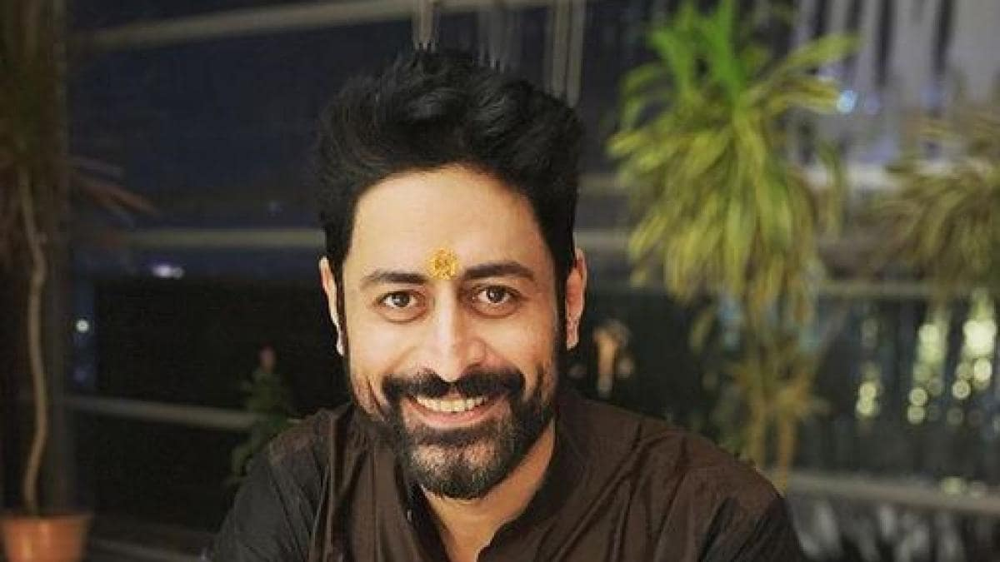

वेब सीरीज काफिर में मोहित की को-स्टार रहीं दीया मिर्जा ने भी उनकी पोस्ट पर कमेंट किया है. दीया ने लिखा - खुश रहिए, और जल्दी ठीक हो जाइए. मेरी तरफ से आपको बहुत सारा प्यार और दुआएं. आपकी रिकवरी जल्दी हो.
पॉपुलर एक्टर मोहित रैना कोरोना वायरस पॉजिटिव पाए गए हैं. उन्हें हॉस्पिटल में एडमिट कराया गया है. मोहित ने सोशल मीडिया पर इसकी जानकारी दी है. उन्होंने दो फोटोज शेयर की हैं. एक फोटो में अस्पताल के बाहर का व्यू है तो दूसरे में उनके हाथों में ड्रिप लगी दिख रही है.
मोहित ने लिखा- मैं जैसा कि बाहर और अंदर देखता हूं तो प्रार्थना करता हूं. पापा हमेशा कहते हैं प्रार्थनाएं हमेशा काम करती हैं. मैं सभी से रिक्वेस्ट करता हूं कि सुरक्षित रहिए और इंसानियत के लिए प्रार्थना करिए. पिछले हफ्ते कोविड पॉजिटिव पाए जाने के बाद मैं डॉक्टर्स के हाथों में सुरक्षित हूं. हर दिन मैं भावनाओं को देखता हूं. इन लोगों की वजह से हम सुरक्षित हैं. कम से कम हम अंदर रह सकते हैं. जल्द ही आपसे मिलूंगा.
वेब सीरीज काफिर में मोहित की को-स्टार रहीं दीया मिर्जा ने भी उनकी पोस्ट पर कमेंट किया है. दीया ने लिखा - खुश रहिए, और जल्दी ठीक हो जाइए. मेरी तरफ से आपको बहुत सारा प्यार और दुआएं. आपकी रिकवरी जल्दी हो.